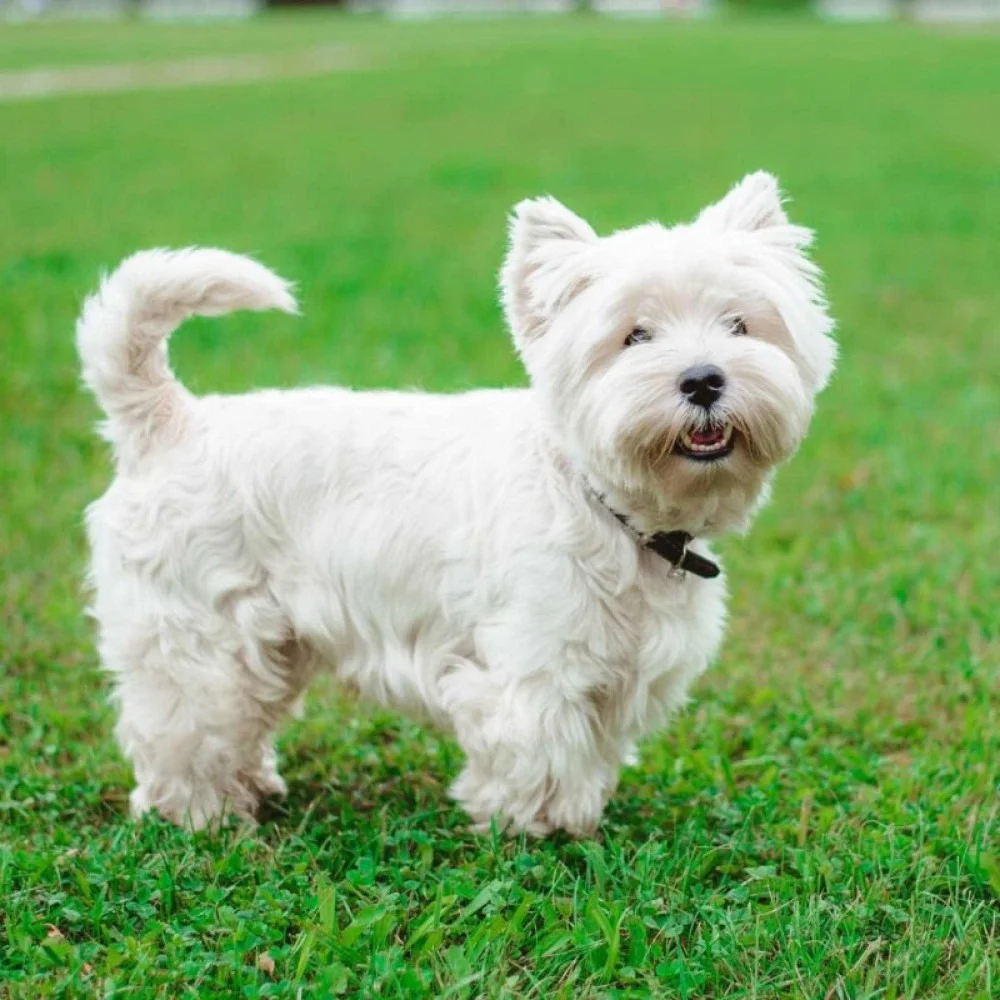
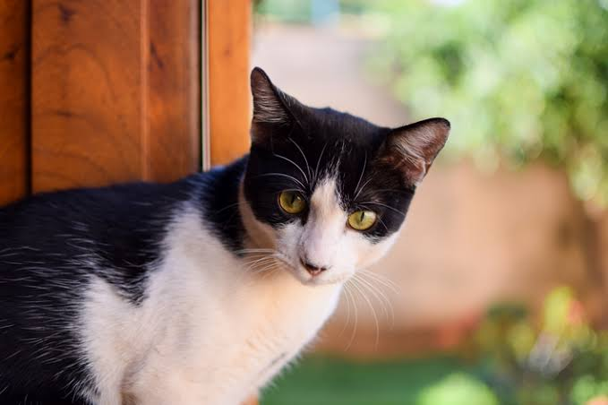
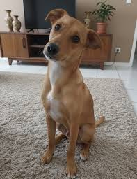
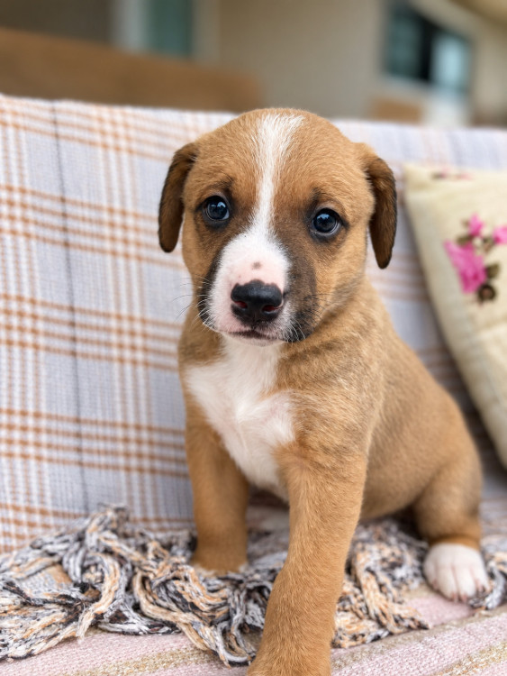

01
Escolha com Carinho
Navegue por perfis detalhados com histórico de saúde completo, carteira de vacinas, fotos reais e temperamento.
Mais de 12.000 vidas transformadas
Conectamos abrigos sérios a famílias que transbordam amor. Encontre seu companheiro ideal ou ajude quem mais precisa hoje.

"O Thor mudou completamente nossa casa. Amor à primeira vista!"
Juliana e Thor • Adotado há 3 mesesAÇÕES QUE SALVAM
Escolha como deseja se conectar à nossa causa. Cada clique alimenta esperança.
Construímos um fluxo 100% humanizado para garantir a segurança dos animais e a certeza de um lar acolhedor.
Navegue por perfis detalhados com histórico de saúde completo, carteira de vacinas, fotos reais e temperamento.
Responda o formulário prévio e tire dúvidas com os protetores e voluntários da ONG para garantir um match ideal.
Agende a visita presencial para conhecer seu novo amigo, assine o termo digital e leve uma vida transformada para casa.
ADOÇÃO RESPONSÁVEL
Eles já superaram o abandono e agora só precisam de uma família para amar.

São Paulo, SP • Porte Médio
Dócil, adora passear no parque e se dá bem com outros cães e gatos.
Quero Conhecer →
Campinas, SP • Porte Grande
Muito tranquila e amorosa, perfeita para famílias que gostam de companhia...
Quero Conhecer →
Porto Alegre, RS • Porte Peq.
Curioso, castrado, usa caixa de areia perfeitamente e ama um bom carinho no...
Quero Conhecer →
Curitiba, PR • Porte Médio
Caramelo raiz! Cheio de energia para corridas matinais e muito companheiro de...
Quero Conhecer →CAMPANHA EMERGENCIAL DE NUTRIÇÃO
Mais de 42 abrigos parceiros dependem das doações deste mês para manter potes cheios e animais saudáveis. Sua doação é 100% auditada e distribuída por necessidade.

CONTEÚDO & ORIENTAÇÃO
 4 min de leitura
4 min de leitura
Aprenda a regra dos 3 dias, 3 semanas e 3 meses para transformar a chegada do seu novo pet em um momento...

3 min de leituraProteja seu melhor amigo e toda a vizinhança conhecendo o cronograma essencial de imunização anual e vermifugação.
 5 min de leitura
5 min de leitura
Dicas de gatificação, telas de proteção, tipos de areia higiênica e rotinas essenciais para um filhote se sentir em...
Tenha acesso gratuito ao painel unificado de triagem, campanhas de arrecadação de ração e vitrine nacional de adoção. Juntos salvamos mais vidas.
Cadastrar ONG →